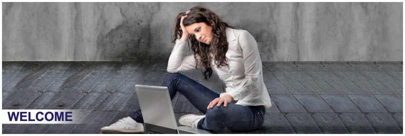

GCPHY

Mission Statement
To encourage young people to reach their full potential by providing quality services in a safe and supportive environment.
WE ACCOMMODATE AND SUPPORT YOUNG PEOPLE WHO ARE:
• In crisis and in need of immediate accommodation (Lawson House).
• Disadvantaged or at risk and in need of transitional (medium term)
accommodation (Bannister House) or (Jessica Dunne Lodge).
• Our Mobile Support service offers a range of services for young
people to secure and sustain stable accommodation.